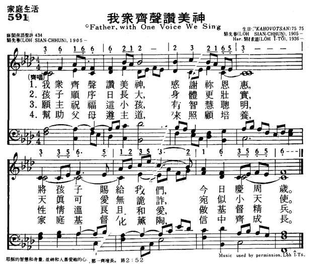
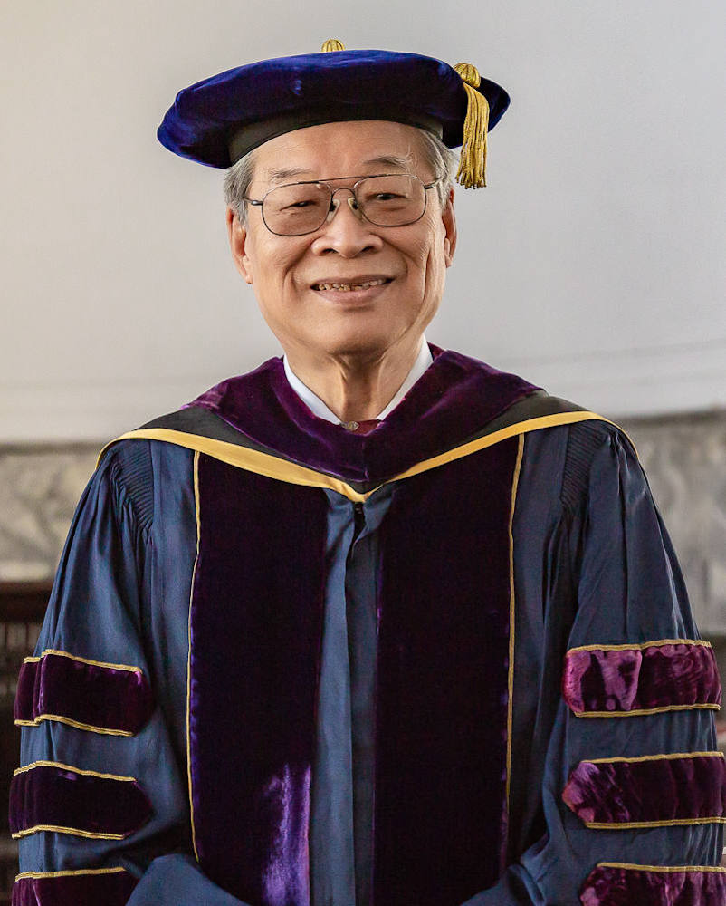

|
|
|
|
|
591我众齐声赞美神
1.我众齐声赞美神，感谢你恩惠，
将孩子赐给我们，今日庆周岁。 2.孩子顺序日长大，身体更壮实， 天真可爱无诡诈，宛似小天使。 3.愿主祝福这小孩，有智慧聪明， 性情温良且和爱，做基督精兵。 4.帮助父母遵主道，来照顾培养， 家庭基督化薰陶，信中齐成长。 |
|
https://www.mred365.cn/szxg/7594.html
 |
|
|
|
|

父親之聲，台灣之歌
----從「我知救贖主是永活」談駱先春牧師
1984年2月28日，終身為台灣的原住民宣教與聖樂事工勞心勞力的駱先春牧師，卸下了在世間的擔子，安息了。
駱維道牧師特譜曲「我知救贖主是永活」一首，來紀念父親。
曲子的副標題為：「敬獻父親：以慶賀他在基督裡的新生命」。
內社流傳的歌聲
義附近，鯉魚潭水庫下方的聚落，舊稱內社，在十九世紀，台灣中部的平埔族群巴宰人遷徙至此，開拓了這個他們稱為Ta-Pa（義為葫蘆）的聚落。巴宰族接受基督教甚早，內社的教會（今鯉魚潭教會）設立於1871年，至今已經一百三十七年了。
今天，在這個被稱為「鯉魚潭」的聚落裡，仍有許多巴宰族人居住其間。長久以來，在漢文化的強勢影響下，逐漸失落對自己的語言與文化的記憶的族人，如今醒覺了，重新尋找著自己的聲音。特別在教會裡，保存與復興巴宰文化的心願相當強。人們努力傳唱那快要被遺忘的巴宰古調，重新尋回失落的節期、慶典，學習巴宰語，以牽曲”Aiyan”吟唱著族群的故事。
在內社聽到老老少少的巴宰族人重新唱出這些Aiyan的曲調，有些對我們來說，並不陌生，因為它們經改寫、填詞後，以基督教詩歌的形式，被收錄在1963年版的台語聖詩裡面。內社的Aiyan的開頭，是台語聖詩233首的「木柵調」，由陳泗治牧師譜上和音，填上杜嘉德牧師作的詞「咱人生命無定著」。內社的Aiyan 的收尾，則是駱維道牧師譜上和聲的台語聖詩97首「承春」。
在內社，教會的弟兄姊妹常傳唱的，還有另外一首描寫耶穌言行的歌謠，何時何人所填之詞，已經不可考。但是那旋律，在一次偶然的機會與我再次相遇。它出現在駱維道牧師1984年作的一首合唱曲「我知救贖主是永活」當中。
這首曲子，是駱維道牧師為紀念他的父親駱先春牧師所作的。曲子當中有兩個主要的旋律在彼此對話：一個旋律就是這首我在內社所聽到的歌，另一個是駱先春牧師所作的聖詩「和平人君」。
以下見於《台灣教會公報》2927期 2008年3月31日-4月6日 p.12-13
984年2月28日，終身為台灣的原住民宣教與聖樂事工勞心勞力的駱先春牧師，卸下了在世間的擔子，安息了。當時，駱維道牧師還滯留國外，不能歸鄉。因為他參與在關懷台灣前途的集會，介紹台灣音樂文化，也為之譜曲，就被打成「台獨溫和派」，護照被取消，無法回台奔喪，於是寫下這首「我知救贖主是永活」，寄回家裡，讓詩班在他父親之追思禮拜中唱，用這樣來紀念父親。
這個巴宰族的曲調，是駱先春牧師所採集並在家中傳唱的，而「和平人君」是他在1942年的聖詩創作。一個是孕育於台灣山川大地，生趣盎然的淳厚之聲，一個是受過西方音樂訓練調教之後，修剪琢磨後的溫潤之聲。對駱維道牧師而言，這兩種聲音，都是他父親的聲音。他以對位的方式讓這兩種聲音彼此對應著、協調著、不同的律動，不同的曲調，交織成一曲充滿復活盼望的信心之歌：
「我知救贖主是永活，日後祂欲豎在土的頂面，我的皮敗壞了後，要醒起來，要在肉體的外面看見上帝。」（約伯記19：25-26）
「基督已經對死復活，做在睏的頭一個復活的，因為亞當眾人攏死，在基督眾人得復活。」（林前15：20, 22）
兩代人的聖詩傳承—由「承春」到「我知救贖主是永活」
駱先春牧師（1905-1984）的恩賜非常多，對教會貢獻多樣而偉大，但他為人非常地謙卑而淡泊名利。他是東部阿美族、卑南族、排灣族、魯凱族與達悟族宣教的開路先鋒，是與信徒分享一切的牧師，也是認真的教師，他又長期擔任聖詩的編輯工作，編輯台語聖詩，也編輯阿美語的聖詩。他寫作、翻譯聖詩的歌詞、也為聖詩譜曲。他的聖詩曲風溫厚、平易近人，是許多人愛吟唱的詩歌。其中最受歡迎的一首，應該是祈禱的詩，聖詩第263首「至聖的天父，求你俯落聽」。許多人都為最後一句禱詞，深深感動：「地上艱苦事，圍阮到失志，獨獨這相愛，使阮無放離。」
他真的是一位不被地上的艱困打倒的人。更重要的是，他從不談起他所遇見的艱苦，不誇耀他自己為了福音事工受多少苦楚。1941年，當日本的軍國主義開始威逼教會時，他曾因堅持福音的原則，與三峽教會的陳文贊長老一起被日本警察囚禁了六十六天。
在駱先春牧師的兒女回憶裡，這位父親是忙碌奔走的、寡言的，是不計較貧困與苦痛的。孩子們一起經驗著饑餓與匱乏、跟著顛沛流離，但是他們也都受到父親那種極端地自律與嚴謹的信仰生活陶冶，分享著他那天才式的音樂感觸，在他所收集、記錄的本土之聲當中成長。
1960年，駱先春牧師的四子駱維道牧師，就擔任德明利姑娘的助理，謄寫聖詩等，他神學院畢業就留在南神擔任助教，並擔任聖詩委員會的專任助理，與楊士養牧師做現用「聖詩」最後的編輯工作。在這一版聖詩編輯的過程中，已經開始考慮加入一些台灣本土的音樂，因此，駱維道牧師志願為一些平埔調譜上和聲。依這個原則他所整理、再製的聖詩之一就是聖詩第97首「看嬰兒在馬槽內」。這是駱先春牧師所收集的曲調之一，原本稱為「鯉魚潭」（但不知道指的是內社，還是埔里的鯉魚潭），經過重譜和聲後，駱維道將它取名為「承春」，「承春」是駱先春的別名，同時，駱維道牧師也藉此調名，表達出他「承繼先春的使命」的心志。
這個旋律，就是在內社的Aiyan當中出現的優美旋律。對聽慣了西方傳統聖詩的耳朵來說，它是陌生而不易掌握的，但是它又是那麼悠揚，那麼令人難忘！它是我個人最喜愛的聖詩歌調之一。
駱維道牧師後來到紐約的協和神學院進修，又到UCLA學習民族音樂。他致力於尋找台灣自己的聲音，在這條尋找的路上，接觸了豐富多彩的亞洲音樂、非洲音樂。當解放神學、本土神學等等具創見與突破性的神學工作正在發展時，駱維道牧師也開始以貼近民族的心的、不同流俗的獨特音樂語言，來做神學，來創作聖詩。
這條尋找台灣的聲音的路，由「承春」調出發，一路以一種無言的方式，父子同行，「我知救贖主是永活」這首紀念駱先春牧師的歌曲，是這段父子同行之路的總結。駱維道牧師自己說，他再也沒有寫出像這首曲子這麼「浪漫」的歌曲了。
以基督為中心的追念與盼望
「我知救贖主是永活」這首曲子的副標題為：「敬獻父親：以慶賀他在基督裡的新生命」。以「慶賀新生命」來代替「悲悼逝者」，充份地表現出基督徒終末的盼望，也表現出一種勇於面對死別的氣度。這雖是一首紀念先人的詩歌，卻不是悲傷的調，甚至在最後一段還高唱哈利路亞：「哈利路亞，哈利路亞，上帝所賜活命，天堂榮光，真實平安，永遠讚美稱讚。」
駱先春牧師的「和平人君」這首聖詩，現在收錄於駱維道牧師主編的「世紀新聖詩」第23首。這首詩原本是聖誕節的詩歌，譜寫於一個充滿動亂的年代，卻充滿著喜樂與平安。這個平安的曲調，加上了巴宰的曲調，以對位的方式來譜曲，讓西方與東方的曲風相遇。這是傳承，也是創新。一種新的音樂在台灣響起。
相信當他的家族齊聚，高唱這歌時，父親、祖父走過的那些險惡山徑、神秘的幽谷、所接觸的這塊土地上饑渴的靈魂，都會再一次活過來，他們的歌聲，將融入大山之莊嚴寧靜中，在基督的愛裡，得到新生命。
- 悼念駱先春牧師(胡文池)
- 牧師阿爸駱先春
- 駱先春牧師略歷
- 駱先春：1928年夏
- 駱先春：難忘的三峽
- 駱先春:音樂漫談(日文)
- 以歌曲紀念父親駱先春
- 駱先春牧師(陳中潔/英文)
- 開拓者駱先春(英文)
- 駱先春牧師的典範(義勝)
- 駱先春牧師二三事(義勝)
- 駱先春牧師（江淑文）
- 駱先春淡水之光(蘇素真)
- 駱先春牧師紀念文集目錄
追尋「黃人靈歌」—— 台灣聖詩創作
呂佳音撰 《新使者雜誌》144期 2014年10月10日 p.54-55。撰者呂佳音/國家音樂廳企劃行銷部。駱維道堅持追尋「黃人靈歌」的初衷，持續創作回應在地社群經驗的聖詩作品。
邁入第三屆的【我是這樣看世界】講座音樂會，今年 (2014年) 以「落樂生歌」為主題，邀請美國、日本、台灣音樂家，9月21日~11月16日於國家音樂廳演奏廳以三場各具風情結合故事、經驗分享與Live演出的音樂會，近距離帶領觀眾探索音樂的種子在世界版圖跨域流動，在不同的土地與時空背景裡播種生根的軌跡。11月16日特別邀請深耕臺灣聖詩創作逾50年的駱維道教授與音樂家們一同述說追尋「黃人靈歌」的故事。
※黑人靈歌的起源
「靈歌」（spirituals）做為音樂類型，在今日已廣泛地被視為一種展現美國黑人基督教信仰的藝術表達形式。儘管原本在教會的語境當中，spirituals並不專指音樂，也非專屬非美社群，但隨著19世紀中「黑人靈歌」曲目的採集、發行與流傳，「靈歌」一詞逐漸成為美國黑人基督教音樂的代名詞。當「靈歌」隨著非美社群的創作與演出成為舉世聞名的宗教音樂形式，許多其他地方的宗教音樂工作者，也希望能夠找到類似「黑人靈歌」的在地表達類型，創作出反映在地民眾精神與世俗生活特色、能夠引起迴響與共鳴的作品。在臺灣，儘管早自荷西時期，便有外國傳教士學習原住民語言以利其宣教工作，但是以原住民或臺灣其他族群的傳統音樂或表達形式做為創作元素的教會音樂作品，卻直到晚近半世紀才出現。
※半世紀的堅持 從黑人到黃人靈歌
1960年代，尚在就讀神學院的的駱維道教授，在德明利姑娘的指導下開始試寫聖詩，並發現以小調處理和聲變化似乎可找到東方的元素，無意間走上了聖詩創作這條路。學生時代的駱維道教授非常喜愛黑人靈歌，1961年受德明利姑娘囑託翻譯紐約哈林區黑人演唱的「耶穌受難劇」，腦海出現極大疑問：「美國黑人所寫的耶穌受難劇以黑人靈歌譜寫是理所當然的，那麼黃種人呢？」他左思右想有天突然想到台灣的「哭調仔」，那是封建時代許多小媳婦被「苦毒」唱出的悲歌。
駱維道教授認為「哭調仔」的精神不畏艱苦、寧願犧牲奉獻與耶穌來世擔世人的罪的精神吻合，於是開始嘗試以「哭調仔」創作聖詩音樂，當時這樣的作品受到相當大的質疑甚至訕笑，此次經驗卻反而激勵他繼續思索，該如何創作出富含地方音樂與言語風格，又能有效將信仰與音樂的信息傳達出去的作品，並影響在地音樂工作者開始反思以在地文化譜寫音樂的方式。獲得加州大學民族音樂學博士學位之後，駱維道教授在亞洲各地教學與從事教會音樂的研究。幾十年來，他堅持當初追尋「黃人靈歌」的初衷，持續創作與發表能夠回應在地社群經驗的聖詩作品。
【我是這樣看世界】「台灣篇」邀請駱維道教授與管風琴演奏家劉信宏、菲律賓裔音樂工作者，西拉雅女婿萬益嘉、原住民歌手少妮瑤等音樂家，帶領觀眾走過曲折漫��的50年臺灣本土音樂創作歷程，並難得邀請駱維道教授本人擔任說故事的人，演出一連串以臺灣傳統音樂為素材的作品。
駱維道，牧師、作曲家、民族音樂學者

1936年生於臺北淡水。駱維道於求學時期隨父親駱先春牧師在臺灣各地進行傳教工作，萌生教會音樂在地化理念，致力於聖詩在地化及臺灣音樂研究。他兩次赴美留學，獲得協和神學院教會音樂碩士及加州大學洛杉磯分校音樂哲學博士。長年任教於亞洲聖儀與聖樂學院及臺南神學院，並於臺灣及亞洲各地進行音樂採集，匯編有
New Songs of Asian Cities（亞洲都市新歌）、Hymns from the four winds（四方聖詩）、Sound the
Bamboo（響竹）等曲集。
資料更新時間：109.4.24